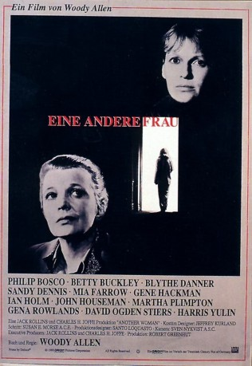
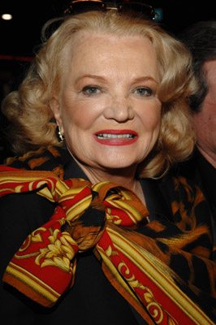
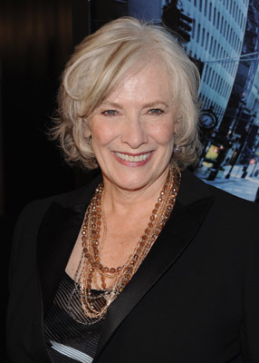
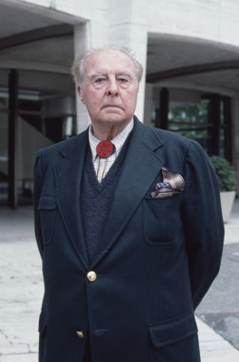
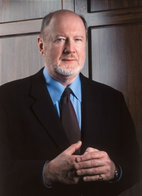
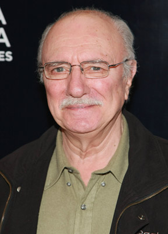
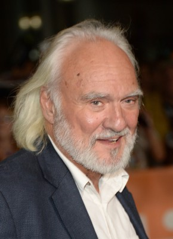
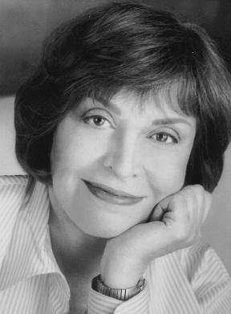
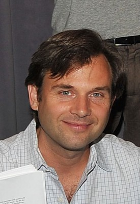
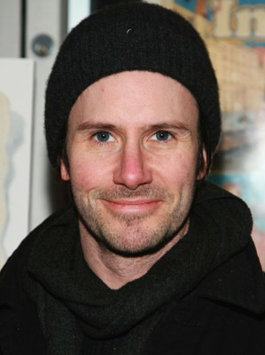

#11589 Eine Andere Frau
Alternativ: Another Woman (Englischer Titel)
 
 IMDB-Wertung: 7.4 / 10
IMDB-Wertung: 7.4 / 10  Tomatometer: 65
Tomatometer: 65  Metascore: 0
Metascore: 0 
Marion, Philosophieprofessorin um die 50, ist mit dem erfolgreichen Arzt Ken scheinbar glücklich verheiratet. Um ungestört an ihrem neuen Buch zu arbeiten, zieht sie sich in ein Appartement zurück. Durch einen Kaminschacht hört Marion zufällig die Therapiesitzungen einer unglücklichen Frau mit. Sie beginnt, über ihr eigenes Leben nachzudenken .
Jahr: 1988
Dauer: 77 Minuten
FSK: 12
Land: USA Studio: Orion PicturesTonspuren: DD5.1 - ,
Untertitel:
Auflösung: 1080p (1920x1080) Größe: 4976 MB
Genre: Drama
Regisseur:  Woody Allen
Woody Allen
Drehbuch: Woody Allen
Soundtrack:
Darsteller:
-  Gena Rowlands als Marion
- Mia Farrow als Hope
 Ian Holm als Ken
Ian Holm als Ken Blythe Danner als Lydia
Blythe Danner als Lydia Gene Hackman als Larry
Gene Hackman als Larry-  Betty Buckley als Kathy
 Martha Plimpton als Laura
Martha Plimpton als Laura-  John Houseman als Marion's Father
- Sandy Dennis als Claire
-  David Ogden Stiers als Young Marion's Father
-  Philip Bosco als Sam
 Harris Yulin als Paul
Harris Yulin als Paul Frances Conroy als Lynn
Frances Conroy als Lynn Fred Melamed als Patient's Voice / Engagement Party Guest
Fred Melamed als Patient's Voice / Engagement Party Guest-  Kenneth Welsh als Donald
 Dana Ivey als Engagement Party Guest
Dana Ivey als Engagement Party Guest-  Alice Spivak als Engagement Party Guest
-  Stephen Mailer als Young Paul
- Jacques Levy als Jack
-  Josh Hamilton als Laura's Boyfriend
- Kathryn Grody als Cynthia
- John Towey als Waiter
- Michael Kirby als Psychiatrist
- Bruce Jay Friedman als Mark
- Bernie Leighton als Piano Player
- Jack Gelber als Birthday Party Guest
- Paul Sills als Birthday Party Guest
- John Schenck als Birthday Party Guest
- Noel Behn als Engagement Party Guest
- Gretchen Dahm als Engagement Party Guest
- Janet Frank als Engagement Party Guest
- Mary Laslo als Clara
- Carol Schultz als Young Clara
- Dax Munna als Little Paul
- Heather Sullivan als Little Marion
- Margaret Marx als Young Marion
- Jennifer Lynn McComb als Young Claire
- Caroline McGee als Marion's Mother
- Dee Dee Friedman als Waitress
- Fred Sweda als Tom Banks
- Jill Whitaker als Eleanor Banks
- Carlotta Schock als Psychiatrist Patient (uncredited)
- Georges Sheinberg als Businessman on ticket line (uncredited)
Datei: X:\1988\Andere Frau, Eine (1988, FSK12, 1920x1080).mkv seit 01.08.2019
Festplatte: Gemischt-01+Anime
 Es gibt insgesamt 66 Filme in der Gruppe '1988'
Es gibt insgesamt 66 Filme in der Gruppe '1988'